General curve families#
Regular star polygon#
- User.RegularStarPolygon(a, Resolution, AsPolar=false)#
There exist infinitely many regular star polytopes in two dimensions, whose Schläfli symbols consist of rational numbers \(\{n/m\}\). They are called star polygons and share the same vertex arrangements of the convex regular polygons.
\[r = \frac{a}{\cos \left(t - \alpha/2 - \alpha \ \lfloor \theta/\alpha \rfloor \right)}, \quad \text{where } \alpha = \frac{2 m \pi}{n}.\]\[x(t) = r \cos(t)),\]\[y(t) = r \sin(t).\]See also: https://en.wikipedia.org/wiki/Star_polygon
See also: https://mathcurve.com/polyedres/regulier/polygoneregulier.shtml
See also: https://mathcurve.com/courbes2d/goursat/goursat.shtml
See also: https://mathcurve.com/courbes3d.gb/polygramme/polygramme.shtml
See also: https://mathcurve.com/courbes3d.gb/billardcylindrique/billardcylindrique.shtml
https://mathworld.wolfram.com/StarPolygon.html
An example in Python
>>> from mpfunlab import User >>> Curve = User.Cardioid(a = 1, Resolution = 200, AsPolar = true) >>> User.Chart2D.Show(Curve, Template = 'PolarCurve', Title = 'Cardioid')
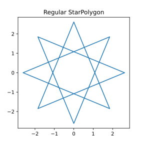
\(\quad\) \(\quad\)Left figure: Regular star polygon
Middle figure: Regular star polygon
Right figure: Regular star polygon
{kind=link}
Regular compound polygon (polygram)#
- User.RegularCompoundPolygon(a, Resolution, AsPolar=false)#
The \(n\) vertices of the regular polygon being determined, all the associated regular polygons are obtained by joining the vertices from \(m\) to \(m\), where \(m\) is coprime with \(n\) and between \(1\) and \(n/2\). The case \(m = 1\) gives the only uncrossed polygon, which is convex.
\[r = \frac{a}{\cos \left(t - \alpha/2 - \alpha \ \lfloor \theta/\alpha \rfloor \right)}, \quad \text{where } \alpha = \frac{2 m \pi}{n}.\]\[x(t) = r \cos(t)),\]\[y(t) = r \sin(t).\]There is therefore bijection between the types of regular polygons and the \(m/n\) rationals strictly greater than \(2\); the symbol \(\{m/n\}\) is called the Schläfli symbol of the polygon.
There exists therefore a similarity after \(\displaystyle \frac{\phi(n)}{2}\) regular polygons of order \(n\), where \(\phi(n)\) is Euler’s totient function. The only orders where there is no regular crossed polygon (or polygram) are 3, 4 and 6, where \(\phi(n) = 2\).
If the \(n\) vertices of \(m\) in \(m\) are joined, where \(m\) is strictly between \(1\) and \(n/2\) and not necessarily coprime with \(n\), a regular polygon of order \(\displaystyle \frac{n}{PGCD(n,m)}\) is obtained; the figure formed of this polygon and its images by the iterated angle rotation \(\displaystyle \frac{2 \pi}{n}\), formed of \(PGCD(n,m)\) regular polygons, is also called a polygram; the symbol of Schläfli \(\{m/n\}\) is attributed to it.
Here are the first polygrams:
See also: https://en.wikipedia.org/wiki/Rotation_of_axes_in_two_dimensions#Derivation
See also: https://en.wikipedia.org/wiki/Euler%27s_totient_function
See also: https://en.wikipedia.org/wiki/Star_polygon
See also: https://en.wikipedia.org/wiki/Polygram_(geometry)#Regular_compound_polygons
See also: https://en.wikipedia.org/wiki/List_of_regular_polytope_compounds
See also: https://en.wikipedia.org/wiki/List_of_regular_polytopes#Stars
See also: https://mathcurve.com/polyedres/regulier/polygoneregulier.shtml
See also: https://mathcurve.com/courbes2d/goursat/goursat.shtml
See also: https://mathcurve.com/courbes3d.gb/polygramme/polygramme.shtml
See also: https://mathcurve.com/courbes3d.gb/billardcylindrique/billardcylindrique.shtml
See also: https://mathworld.wolfram.com/Polygram.html
An example in Python
>>> from mpfunlab import User >>> Curve = User.Cardioid(a = 1, Resolution = 200, AsPolar = true) >>> User.Chart2D.Show(Curve, Template = 'PolarCurve', Title = 'Cardioid')
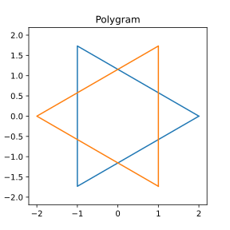
\(\quad\) \(\quad\)Left figure: Circle
Middle figure: Circle
Right figure: Circle
{kind=link}
Epicycloid#
- User.Epicycloid(a, Resolution, AsPolar=false)#
The epicycloids are the curves described by a point on a circle \((C)\) rolling without slipping on a base circle \((C_0)\), the open disks with boundaries \((C)\) and \((C_0)\) being disjoint. Therefore, they are special cases of epitrochoids. An epicycloid has parametric equations
\[q x(t) = a \left( (q+1) \cos(t) - \cos \left( (q+1) t \right) \right),\]\[q y(t) = a \left( (q+1) \sin(t) - \sin \left( (q+1) t \right) \right).\]See also Wikipedia [1490], MathWorld [1135], MathCurve [322].
The epicycloids are curves composed of isometric arcs (the arches) joining at cuspidal points (obtained for \(\displaystyle t = \frac{2\pi}{q}\)) in a finite number equal to the numerator of \(q\) if \(q\) is rational, or in an infinite number otherwise.
When \(q\) is rational, \(\displaystyle q = \frac{n}{m}\), the curve is algebraic and rational (take \(\displaystyle u = \tan \left(\frac{t}{2m} \right)\) as a parameter).
Its looks like a regular polygon, crossed if \(m \ge 2\), with \(n\) vertices joined by \(m\) points by the curves located outside the circle \((C_0)\).
The notation of simple epicycloid with \(n\) cusps \((E_n)\) refers to the case \(q = n\), i.e. when there are no crossovers.
Special cases are the cardioid \((q=1)\), the nephroid \((q=2)\), and the double cardioid \((q=1/2)\),
An example in Python
>>> from mpfunlab import User >>> Curve = User.Cardioid(a = 1, Resolution = 200, AsPolar = true) >>> User.Chart2D.Show(Curve, Template = 'PolarCurve', Title = 'Cardioid')
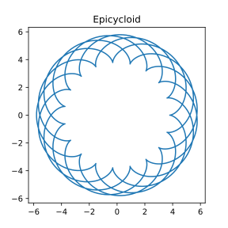
\(\quad\) \(\quad\)Left figure: Epicycloid
Middle figure: Epicycloid
Right figure: Epicycloid
{kind=link}
Hypocycloid#
- User.Hypocycloid(a, Resolution, AsPolar=false)#
The hypocycloids are the curves described by a point on a circle \((C)\) rolling without slipping on, and inside, a base circle \((C_0)\), when the rolling circle is smaller than the fixed one. Therefore, they are special cases of hypotrochoids. A hypocycloid has parametric equations
\[q x(t) = a \left( (q-1) \cos(t) - \cos \left( (q-1) t \right) \right),\]\[q y(t) = a \left( (q-1) \sin(t) - \sin \left( (q-1) t \right) \right).\]See also Wikipedia [1496], MathWorld [1139], MathCurve [328].
The hypocycloids are curves composed of isometric arcs (the arches) connecting at cuspidal points (obtained for \(\displaystyle t = \frac{2\pi}{q}\)) in a finite number equal to the numerator of \(q\) if \(q\) is rational, or in an infinite number otherwise.
When \(q\) is rational, \(\displaystyle q = \frac{n}{m}\), the curve is algebraic and rational (take \(\displaystyle u = \tan \left(\frac{t}{2m} \right)\) as a parameter).
It has the same structure as a regular polygon, crossed if \(m \ge 2\), with \(n\) vertices linked from \(m\) to \(m\) by curves located inside the circle \((C_0)\).
The notation of simple hypocycloid with \(n\) cusps \((E_n)\) refers to the case \(q = n\), i.e. when there are no crossings.
Special cases are the point \((q=1)\), the La Hire line \((q=2)\), the deltoid \((q=3)\), and the astroid \((q=4)\).
An example in Python
>>> from mpfunlab import User >>> Curve = User.Cardioid(a = 1, Resolution = 200, AsPolar = true) >>> User.Chart2D.Show(Curve, Template = 'PolarCurve', Title = 'Cardioid')
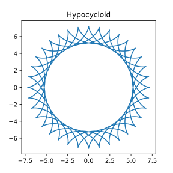
\(\quad\) \(\quad\)Left figure: Hypocycloid
Middle figure: Hypocycloid
Right figure: Hypocycloid
{kind=link}
Epitrochoid#
- User.Epitrochoid(a, Resolution, AsPolar=false)#
The epitrochoids are the curves described by a point linked to a circle \((C)\) rolling without slipping on a base circle \((C_0)\), the open disks with boundaries \((C)\) and \((C_0)\) being disjoint. An epitrochoid has parametric equations
\[q x(t) = a \left( (q+1) \cos(t) - k \cos \left( (q+1) t \right) \right),\]\[q y(t) = a \left( (q+1) \sin(t) - k \sin \left( (q+1) t \right) \right).\]See also Wikipedia [1491], MathWorld [1136], MathCurve [324].
For \(d = a + b\), we get the roses.
For \(k < 1\), the curve is also called shortened epicycloid.
For \(k > 1\), the curve is also called elongated epicycloid.
The limit case is \(\displaystyle k = \frac{1}{q+1}\); there is then a flat point.
For \(\displaystyle \frac{1}{q+1} < k < 1\), the curve undulates, with points of inflection.
For \(k = 1\), we obtain the epicycloid, with cusps.
For \(1<k<q+1\), the curve makes loops, with concave and convex portions, (positive angular speed, then negative alternately).
For \(k = q + 1\), we get a rose with index \(n < 1\) , of polar equation \(\displaystyle \rho = 2 d \cos \frac{q}{q+2} \theta\).
The case \(k>q-1\) leads to a more complicated pattern.
An example in Python
>>> from mpfunlab import User >>> Curve = User.Cardioid(a = 1, Resolution = 200, AsPolar = true) >>> User.Chart2D.Show(Curve, Template = 'PolarCurve', Title = 'Cardioid')
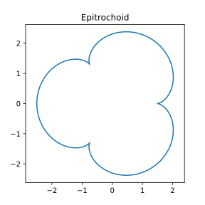
\(\quad\)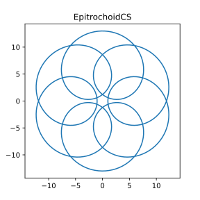
\(\quad\)Left figure: Epitrochoid
Middle figure: Epitrochoid
Right figure: Epitrochoid
Given a hypocycloid with parameter \(a, q\), there exists a circumscribed hypotrochoid, with parameter \(a', q, k\) , with \(\displaystyle a' = \frac{q-1}{q+1} a\) and \(\displaystyle k = \frac{q+1}{q-1}\).
{kind=link}
{kind=link}
Hypotrochoid#
- User.Hypotrochoid(a, Resolution, AsPolar=false)#
The hypotrochoids are the curves described by a point linked to a circle \((C)\) rolling without slipping internally on a base circle \((C0)\). A hypocycloid has parametric equations
\[q x(t) = a \left( (q-1) \cos(t) - k \cos \left( (q-1) t \right) \right),\]\[q y(t) = a \left( (q-1) \sin(t) - k \sin \left( (q-1) t \right) \right).\]See also Wikipedia [1497], MathWorld [1140], MathCurve [329].
For \(k = 1\), we get the hypocycloids.
If \(a\) is fixed but \(q\) is changed into \(\displaystyle \frac{q}{q-1}\) and k into \(\displaystyle \frac{1}{k}\), then the hypotrochoid obtained is the homothetic image of the initial one with ratio \(k\). Therefore, we get all the hypotrochoids by considering only the case \(q \ge 2\).
For \(q = 2\), we get the ellipses.
For \(q > 2\), the curve is also called curtate hypocycloid if \(k < 1\), and prolate hypocycloid if \(k > 1\).
However, according to the preceding paragraph, in the case \(1 < q < 2\), the curtate hypocycloids are paradoxically obtained for \(k > 1\) and the prolate ones for \(k < 1\).
For \(k = q - 1\), we get a rose of index \(n > 1\).
The hypocycloid with parameter \(q = n/m\) constitutes a “rounded” approximation of the regular polygon of type \((n, m)\); for the portions between two vertices to be as linear as possible, we can consider the limit case where this portion does not have an inflexion point, which corresponds to the case \(k = 1 / (q - 1)\).
An example in Python
>>> from mpfunlab import User >>> Curve = User.Cardioid(a = 1, Resolution = 200, AsPolar = true) >>> User.Chart2D.Show(Curve, Template = 'PolarCurve', Title = 'Cardioid')
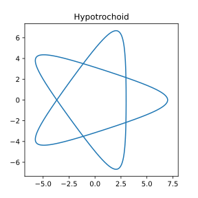
\(\quad\) \(\quad\)Left figure: Hypotrochoid
Middle figure: Hypotrochoid
Right figure: Hypotrochoid
{kind=link}
Rose curve#
- User.RoseCurve(a, Resolution, AsPolar=false)#
A rose curve, also called Grandi’s rose or the multifolium, is a curve which has the shape of a petalled flower. The polar equation of the rose is generally given as \(r = a \cos(nt)\) or by the version rotated by 90 degrees, \(r = a \sin(nt)\). The sine version has the advantage that roses with odd \(n\) have a petal oriented vertically (up or down depending on \(n\)), whereas the cosine orientation gives a petal oriented to the right.
See also Wikipedia [1541], MathWorld [1158], MathCurve [337].
If \(n\) is odd, the rose is \(n\)-petalled. If \(n\) is even, the rose is \(2n\)-petalled.
The curve is algrebraic iff \(n=p/q\) is rational, with degree \(p+q\) when \(pq\) is odd and \(2(p+q)\) when \(pq\) is even.
If \(n=p/q\) is a rational number, then the curve closes at a polar angle of \(\theta = \pi q m\), where \(m=1\) if \(pq\) is odd and \(m=2\) if \(pq\) is even. If \(n\) is irrational, then there are an infinite number of petals. For \(n>1\) the curve is a hypotrochoid, and for \(0<n<1\) it is an epitrochoid. The roses are views from above of the clelias.
Special cases are the limaçon trisectrix (\(n = 1/3\)), the Dürer folium (\(n=1/2\)), the circle (\(n=1\)), the quadrifolium (\(n=2\)) and the trifolium (\(n=3\)).
An example in Python
>>> from mpfunlab import User >>> Curve = User.Cardioid(a = 1, Resolution = 200, AsPolar = true) >>> User.Chart2D.Show(Curve, Template = 'PolarCurve', Title = 'Cardioid')
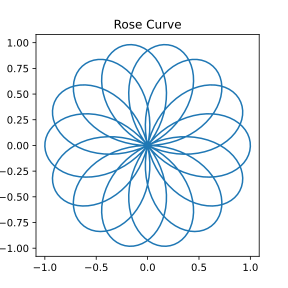
\(\quad\) \(\quad\)Left figure: Rose curve
Middle figure: Rose curve
Right figure: Rose curve
{kind=link}
Lissajous curves#
- User.LissajousCurve(a, Resolution, AsPolar=false)#
Lissajous curves are the family of curves described by the parametric equations
\[x(t) = a \sin(\omega t + \delta),\]\[y(t) = b \sin(t).\]See also Wikipedia [1504], MathWorld [1143], MathCurve [334].
Special cases are the line (\(\omega = 1, \delta = 0\)), the circle (\(a=b, \omega = 1, \delta = \pi/2\)), the ellipse (\(a=b, \omega = 1, \delta = \pi/2\)), the section of a parabola (\(\omega = 2, \delta = \pi/2\)).
An example in Python
>>> from mpfunlab import User >>> Curve = User.Cardioid(a = 1, Resolution = 200, AsPolar = true) >>> User.Chart2D.Show(Curve, Template = 'PolarCurve', Title = 'Cardioid')
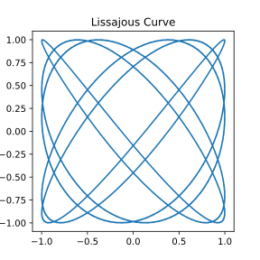
\(\quad\) \(\quad\)Left figure: Lissajous curve
Middle figure: Lissajous curve
Right figure: Lissajous curve
{kind=link}
Superellipses (Lamé curves)#
- User.Superellipse(a, Resolution, AsPolar=false)#
Superellipses are the family of curves described by the parametric equations
\[x(t) = |\cos(t)|^{2/r} \cdot a \cdot \mathrm{sgn}(\cos(t)),\]\[y(t) = |\sin(t)|^{2/r} \cdot b \cdot \mathrm{sgn}(\sin(t)),\]with \(0 \le t \le \pi/2\).
See also Wikipedia [1512], MathWorld [1144], MathCurve [330].
The restriction to r>2 is sometimes made.
The generalization to a three-dimensional surface is known as a superellipsoid.
Superellipses with a=b are also known as Lamé curves or Lamé ovals, and the case \(a=b\) with \(r=4\) is sometimes known as the squircle.
Special cases are the astroid (\(r =2/3\)), the diamond (\(r =1\)), the ellipse (\(r =2\)).
See also: https://en.wikipedia.org/wiki/Sign_function
An example in Python
>>> from mpfunlab import User >>> Curve = User.Cardioid(a = 1, Resolution = 200, AsPolar = true) >>> User.Chart2D.Show(Curve, Template = 'PolarCurve', Title = 'Cardioid')
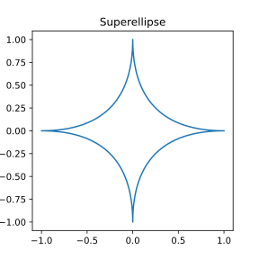
\(\quad\) \(\quad\)Left figure: Superellipse (Lamé curve)
Middle figure: Superellipse (Lamé curve)
Right figure: Superellipse (Lamé curve)
{kind=link}
Epispirals#
- User.Epispiral(a, Resolution, AsPolar=false)#
The curve is composed of an infinite branch obtained for \(\displaystyle -\frac{\pi}{2n} < 0 < \frac{\pi}{2n}\), and of all its images by rotations by angle \(\displaystyle k \left(\pi + \frac{\pi}{n} \right)\) for integer values of \(k\). When \(n\) is a rational number with numerator \(p\), and denominator \(q\), the curve is symmetrical about \(O\) iff \(p\) or \(q\) is even.
In this case, the curve is composed of \(2p\) branches derived from the initial branch by rotations by angles \(\displaystyle \frac{2 k \pi}{n}\) and \(\displaystyle \frac{2 k \pi}{n} + \pi\).
The epispirals are solutions of the problem that consists in determining the trajectories in space of a massive point subject to a force centred on \(O\) proportional to \(\displaystyle \frac{1}{\rho^3}\) (this force is, thanks to the Binet formula, proportional to \(\displaystyle u^2 (u + u'')\) which is here \(\displaystyle (1+n^2)u^2\), with \(\displaystyle u = \frac{1}{\rho}\)); the other solutions are the Poinsot spirals, with intermediary case the hyperbolic spiral.
See also Wikipedia [1528], MathWorld [1151], MathCurve [323].
An example in Python
>>> from mpfunlab import User >>> Curve = User.Cardioid(a = 1, Resolution = 200, AsPolar = true) >>> User.Chart2D.Show(Curve, Template = 'PolarCurve', Title = 'Cardioid')
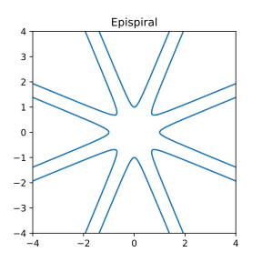
\(\quad\) \(\quad\)Left figure: Epispiral
Middle figure: Epispiral
Right figure: Epispiral
Special cases are the line (\(n=1\)), the crosscurve (\(n=2\)), the rectangukar trefoil (\(n=3\)), the Delanges trisectrix (\(n=1/2\)), the MacLaurin trisectrix (\(n=1/3\)).
It is important to set \((x, y)\) to
Nanfor values greater 10 to avoid artificial lines.
{kind=link}
Nodal curves (stereographic projections of the clelia)#
- User.NodalCurve(a, Resolution, AsPolar=false)#
Polar equation: \(\rho = a \tan (n \theta)\).
The nodal curves are the Brocard transforms of the Kappa, when the pole is at the centre of the Kappa. Each curve is composed of an infinite branch, the base, obtained for \(\displaystyle -\frac{\pi}{2n} < 0 < \frac{\pi}{2n}\), and all its images by the rotations of angle \(\displaystyle k \frac{\pi}{n}\) when \(k\) is an integer.
If n is rational and its numerator is p and its denominator q, then the curve is composed of 2p branches, images of the base branch by rotation when q is odd, and p branches when it is even.
Special cases are the Kappa (\(n=1\)), the windmill (\(n=2\)),the right strophoid (\(n=1/2\)).
All nodal curves are stereographic projections of the clelia. The inverse (with centre \(O\) and radius \(a^2\)) of a nodal curve is the same curve turned by \(\displaystyle \frac{\pi}{2n}\).
An example in Python
>>> from mpfunlab import User >>> Curve = User.Cardioid(a = 1, Resolution = 200, AsPolar = true) >>> User.Chart2D.Show(Curve, Template = 'PolarCurve', Title = 'Cardioid')
See also: MathCurve [345].
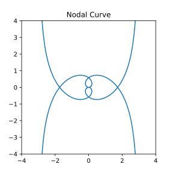
\(\quad\) \(\quad\)Left figure: Nodal curves
Middle figure: Nodal curves
Right figure: Nodal curves
It is important to set \((x, y)\) to
Nanfor values greater 10 to avoid artificial lines.
{kind=link}
Cyclic-harmonic curves#
- User.CyclicHarmonicCurve(a, Resolution, AsPolar=false)#
Polar equation: \(\rho = a (1 + e \cos (n \theta)\).
The cyclic-harmonic curves are the conchoids of roses with respect to their centre. The curve is composed of a base pattern, symmetrical about Ox, obtained for \(\displaystyle -\frac{\pi}{n} \le 0 \le \frac{\pi}{n}\), transformed by all the rotations of \(\displaystyle 2 k \frac{\pi}{n}\) for integer values of \(k\). When \(n\) is a rational number and \(p\) is its numerator, \(p\) rotations give the whole curve.
Case \(e < 1\): For \(n = p / q\), the cyclic-harmonic curve of parameter \(n\) is one of the possible projections of the Turk’s head knot of type \((p,q)\); its \(p\) external summits and its \(p\) internal vertices form a regular polygon, and it has \(p(q-1)\) double points.
Special cases are the trefoil knot (\(n=3/2\)), the projection of the 5.1 knot (\(n=5/2\)) the projection of the figure-eight knot (\(n=2/3\)).
Case \(e = 1\):
Special cases are the cardioid for \(n=1\) (see also Wikipedia [1520], MathWorld [1148], MathCurve [317]), the double egg (\(n=2\))
Case \(e > 1\):
Special cases are the limaçon of Pascal for \(n=1\) (see also Wikipedia [1536], MathWorld [1155], MathCurve [333]), the cycloid (or trisectrix) of Ceva for \(n=2\) (see also Wikipedia [1523], MathWorld [1150], MathCurve [318]), and Freeth’s nephroid for \(n=1/2\) (see also Wikipedia [1530], MathWorld [1153], MathCurve [326]).
See also: MathCurve [343].
An example in Python
>>> from mpfunlab import User >>> Curve = User.Cardioid(a = 1, Resolution = 200, AsPolar = true) >>> User.Chart2D.Show(Curve, Template = 'PolarCurve', Title = 'Cardioid')
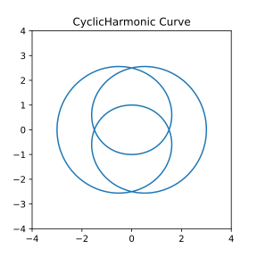
\(\quad\) \(\quad\)Left figure: Cyclic-harmonic curves
Middle figure: Cyclic-harmonic curves
Right figure: Cyclic-harmonic curves
It is important to set \((x, y)\) to
Nanfor values greater 10 to avoid artificial lines.
{kind=link}
Rational circular cubics#
- User.RationalCircularCubic(a, Resolution, AsPolar=false)#
The rational circular cubics have the following parametrization (see MathCurve [347]):
\[x(t) = \frac{d t^2 + 2bt + 2a + d}{1 + t^2}\]\[y(t) = \frac{d t^3 + 2bt^2 + 2at + d t}{1 + t^2} = t x(t).\]They have a real singularity (see Wikipedia [1600]), which is necessarily unique.
For \(\sqrt{a^2+b^2} > |a+d|\), the cubic is called crunodal, i.e. this singularity is a double point with different tangents (see Wikipedia [1591], MathWorld [1165]).
For \(\sqrt{a^2+b^2} = |a+d|\), the cubic is called cuspidal, i.e. this singularity is a cuspidal point (see Wikipedia [1592], MathWorld [1166]).
For \(\sqrt{a^2+b^2} < |a+d|\), the cubic is called acnodal, i.e. this singularity is an isolated point (see Wikipedia [1586], MathWorld [1161]).
Many other parametric curves can be obtained as special cases:
For \(b=0\), we get the right rational circular cubics (see also: MathCurve [348]).
For \(\sqrt{a^2+b^2} = |a+d|\), we get the cissoids (see Wikipedia [1588], MathWorld [1162], MathCurve [341]).
For \(d=-a\), we get the strophoids (see Wikipedia [1543], MathWorld [1159], MathCurve [339]).
For \(a = -2d, b = 0\), we get the Maclaurin trisectrix (see Wikipedia [1601], MathWorld [1167], MathCurve [344]).
In the right and acnodal case (i.e. b = 0, d > 0), we get the cubic (or conchoid) of de Sluze (see Wikipedia [1522], MathWorld [1149], MathCurve [338]).
An example in Python
>>> from mpfunlab import User >>> Curve = User.Cardioid(a = 1, Resolution = 200, AsPolar = true) >>> User.Chart2D.Show(Curve, Template = 'PolarCurve', Title = 'Cardioid')
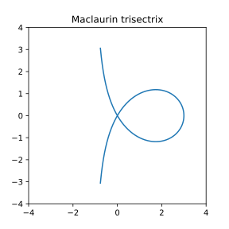
\(\quad\) \(\quad\)Left figure: Rational circular cubics
Middle figure: Rational circular cubics
Right figure: Rational circular cubics
{kind=link}